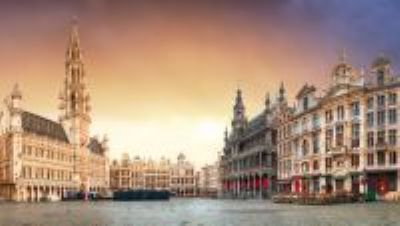

Active and experiential schools offer a learner-centered educational environment, where children grow through experimentation, autonomy, and collaboration. These schools are inspired by approaches such as Freinet,Waldorf, Decroly, Reggio Emilia, project-based learning, or democratic education, all aiming to empower the child as the main agent of their learning journey.
In Brussels

Secondary schools in Brussels provide a dynamic and nurturing alternative to traditional education, encouraging creativity, critical thinking, and self-confidence from a young age.
Many of these schools offer bilingual or multilingual instruction (French, English, Dutch…), and combine alternative pedagogy with formal recognition through official diplomas such as the Belgian CEB or the International Baccalaureate (IB)